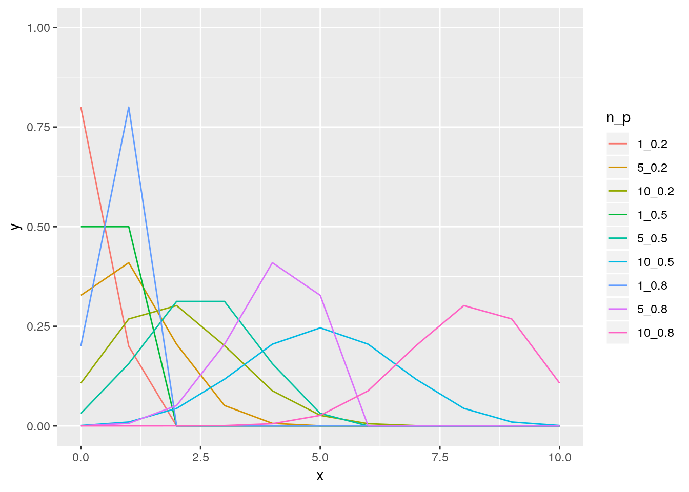

La loi exponentielle a pour support \(\left[0,+\infty\right[\). \(X\) suit une loi exponentielle de paramètre \(\lambda\) si elle a pour densité \[[X=t]=\left\lbrace \begin{array}{l} \lambda exp(-\lambda \,t) \quad t\geq 0,\cr 0 \quad sinon\cr \end{array}\right. \] L’espérance et la variance sont données par \[\mathbb{E}(X)=\frac{1}{\lambda} \quad \mbox{et}\quad \mathbb{V}(X)=\frac{1}{\lambda^2}.\]
abc<-seq(0,20,0.1)
par(mfcol=c(2,2))
lambda<-c(0.1, 0.5, 1, 2)
ll <- lapply(lambda, function(l_){
data.frame(x=abc, y=dexp(abc, rate=l_), lambda=l_)
})
res <- do.call('rbind', ll)
res$lambda <- as.factor(res$lambda)
p <- ggplot(data = res, aes(x=x, y=y, col=lambda)) + geom_line()
print(p)suppressMessages(ggsave(filename = 'expDist.pdf', width = 5, height=4))Si \(Y_1, \ldots, Y_n\) sont des variables i.i.d de loi exponentielle de paramètre \(\lambda\) alors \(X=\sum_{i=1}^n Y_i\) suit une loi Gamma de paramètres de forme \(n\) et de paramètre d’échelle \(\lambda\). On peut généraliser la définition à un \(n\) non entier. Le support d’une loi Gamma est \(\left[0,+\infty\right[\) et si \(X\) suit une loi \(\Gamma(a,b)\), sa densité est donnée par~: \[[X=t]=\left\lbrace \begin{array}{l} \frac{b^a t^{a-1} e^{-b\, t}}{\Gamma(a)} \quad t\geq 0,\cr 0 \quad sinon\cr \end{array}\right. \]
L’espérance et la variance sont données par \[\mathbb{E}(X)=\frac{a}{b} \quad \mbox{et}\quad \mathbb{V}(X)=\frac{a}{b^2}.\] Quelques exemples de lois Gamma pour différentes valeurs de \(a\) et \(b\)~:
abc<-seq(0,20,0.1)
par(mfcol=c(3,3))
a<-c(0.1, 1, 10)
b<-c(0.1, 1, 10)
z <- expand.grid(a,b)
zconc <- paste(z$Var1, z$Var2, sep='_')
ll <- lapply(1:nrow(z), function(r_){
data.frame(x=abc, y=dgamma(abc, rate=z[r_,1], shape = z[r_,2]), a_b=zconc[r_])
})
res <- do.call('rbind', ll)
p <- ggplot(data = res, aes(x=x, y=y, col=a_b)) + geom_line() + ylim(c(0,5))
suppressMessages(ggsave(plot = p, filename = 'gammaDist.pdf', width = 5, height=4))## Warning: Removed 1 rows containing missing values (geom_path).print(p)## Warning: Removed 1 rows containing missing values (geom_path).On dit que \(X\) suit une loi Inverse-Gamma si \(X^{-1}\) suit une loi Gamma. Par ces propriétés mathématiques, la loi Inverse Gamma est naturellement candidate comme prior pour le paramètre de variance dans un modèle normal. En effet si \(Y\sim\mathcal{N}(\mu,\sigma^2)\) avec \(\mu\) connu et \(\sigma^2 \sim \Gamma(a,b)\), alors \(\sigma^2\vert Y,\mu \sim \Gamma(a',b')\).
La loi Beta a pour support \(\left[0,\right]\). Si \(X\) suit une loi beta de paramètre \((a,b)\) alors la densité de \(X\) est donnée par \[[X=t]=\left\lbrace \begin{array}{l} \frac{\Gamma(a+b) t^{a-1} (1-t)^{b-1} }{\Gamma(a)\Gamma(b)} \quad t\in [0,1] ,\cr 0 \quad sinon\cr \end{array}\right. \]
L’espérance et la variance sont données par \[\mathbb{E}(X)=\frac{a}{a+b} \quad \mbox{et}\quad \mathbb{V}(X)=\frac{a\,b }{(a+b)^2 (a+b+1)}.\]
abc<-seq(0,1,0.01)
a<-c(0.1, 1, 2)
b<-c(0.1, 1, 2)
z <- expand.grid(a,b)
zconc <- paste(z$Var1, z$Var2, sep='_')
ll <- lapply(1:nrow(z), function(r_){
data.frame(x=abc, y=dbeta(abc, z[r_ , 1] , z[r_ , 2]), a_b=zconc[r_])
})
res <- do.call('rbind', ll)
p <- ggplot(data = res, aes(x=x, y=y, col=a_b)) + geom_line() + ylim(c(0,5))
suppressMessages(ggsave(plot = p, filename = 'betaDist.pdf', width = 5, height=4))
print(p)\(Y\) suit une loi de Bernoulli si le support de \(Y\) est \(\left\lbrace 0,1\right\rbrace\) et \(\mathbb{P}(Y=1)=p\).
Si \(Y_1,\ldots, Y_n\) sont des variables aléatoires indépendantes qui suivent une loi de Bernoulli de paramètre \(p\), alors \(X=\sum_{i=1}^n Y_i\) suit une loi binomiale de paramètres \((n,p)\). Le support de \(X\) est \(\left\lbrace 0,1, \ldots n\right\rbrace\) est la loi de probabilité de \(X\) est donnée par \[[X=k] =
\left(\begin{array}{c} k \cr n \cr \end{array} \right) p^k \, (1-p)^{n-k} \qquad k \in \left\lbrace 0,1, \ldots n\right\rbrace \]
L’espérance et la variance sont données par \[\mathbb{E}(X)=n\, p \quad \mbox{et}\quad \mathbb{V}(X)=n \, (1-p)\]
abc<-seq(0,10,1)
n<-c(1,5,10)
p<-c(0.2,0.5, 0.8)
z <- expand.grid(n,p)
zconc <- paste(z$Var1, z$Var2, sep='_')
ll <- lapply(1:nrow(z), function(r_){
data.frame(x=abc, y= dbinom(abc, size = z[r_ , 1] ,p = z[r_ , 2]) , n_p=zconc[r_])
})
res <- do.call('rbind', ll)
p <- ggplot(data = res, aes(x=x, y=y, col=n_p)) + geom_line() + ylim(c(0,1))
suppressMessages(ggsave(plot = p, filename = 'binomDist.pdf', width = 5, height=4))
print(p)
Le support d’une loi de Poisson est \(\mathbb{N}\). \(X\) suit une loi de Poisson de paramètre \(\lambda\) si \[[X=k]=\frac{\lambda^k}{k!}\exp{(-\lambda\, k)}\quad k \in \mathbb{N}\] L’espérance et la variance sont données par \[\mathbb{E}(X)=\lambda \quad \mbox{et}\quad \mathbb{V}(X)=\lambda\]
abc<-seq(0,20,1)
lambda<-c(0.5 , 1, 4, 10)
ll <- lapply(1:length(lambda), function(r_){
data.frame(x=abc, y= dpois(abc, lambda = lambda[r_]) , lambda=as.character(lambda[r_]))
})
res <- do.call('rbind', ll)
p <- ggplot(data = res, aes(x=x, y=y, col=lambda)) + geom_line() + ylim(c(0,1))
suppressMessages(ggsave(plot = p, filename = 'poisDist.pdf', width = 5, height=4))
print(p)